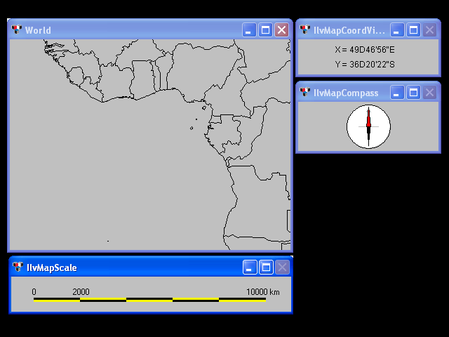

showguiShowing scale, a compass and a coordinate viewer.
This sample shows three graphical user interface components useful in cartography applications. The scale component shows the scale of a view connected to a manager. The coordinate viewer component shows the coordinates of the mouse when on top of a view displaying a map. The compass component shows both the geographic and the cartographic north directions. In this sample, the three components are connected to a map representing the world. This map can be scaled and translated using a pan/zoom interactor. The map can also be rotated using the 'o' accelerator. Each transformation of the map is automatically monitored by the GUI components. You can also modify the aspect of the component by clicking it. A menu is then displayed to modify the aspect of the component.
IlvCompassIlvScaleIlvCoordViewer